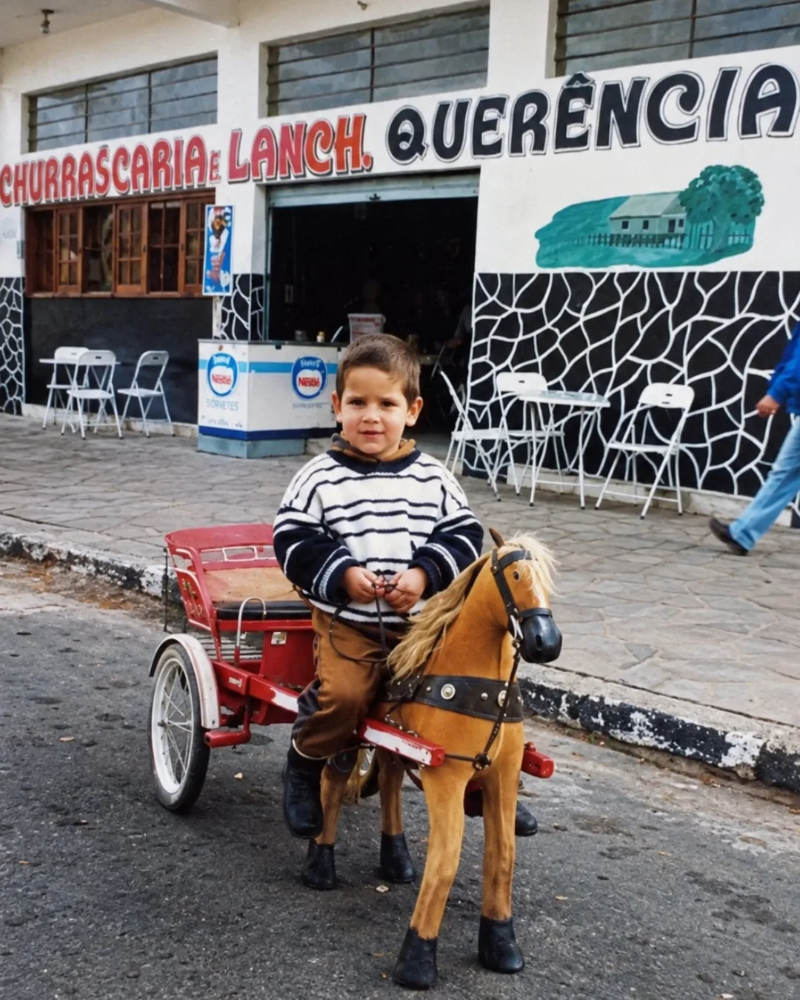
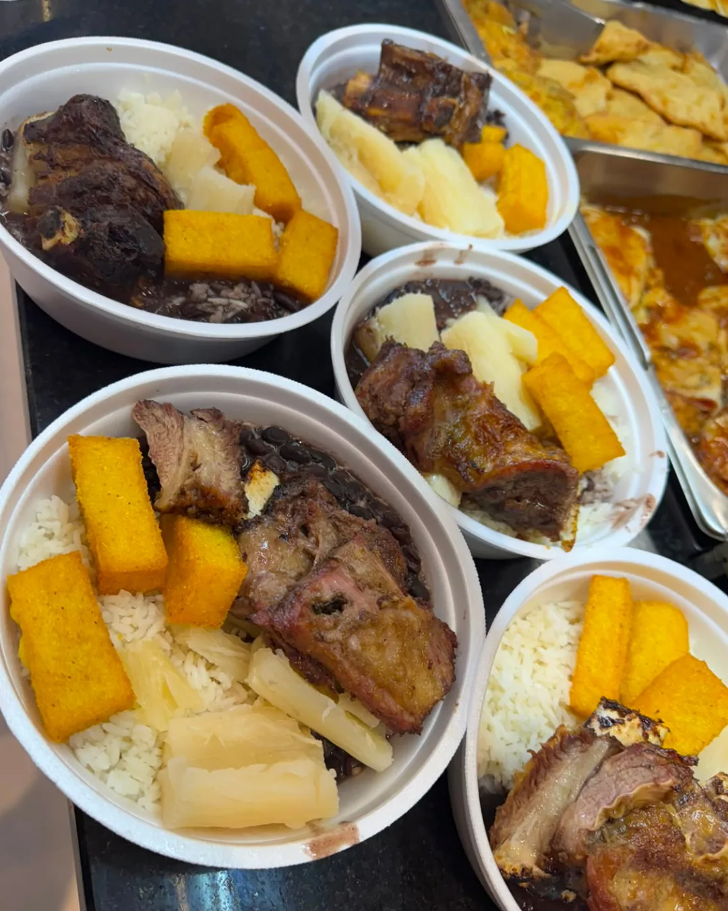
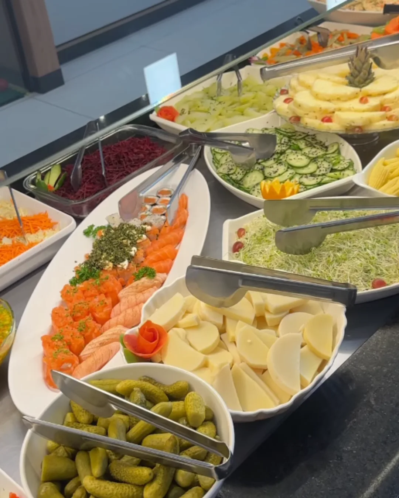
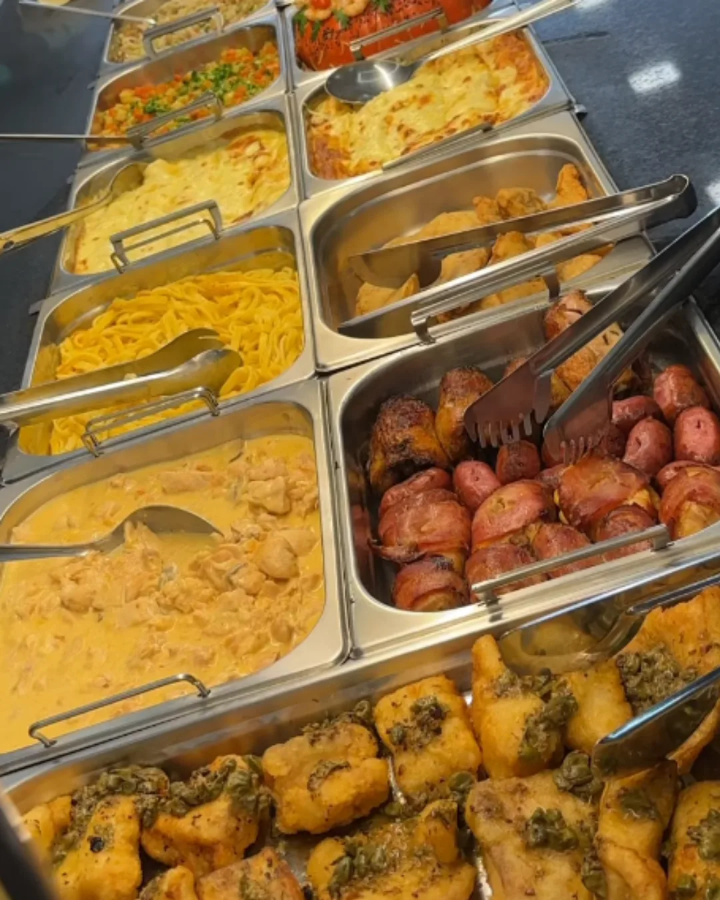
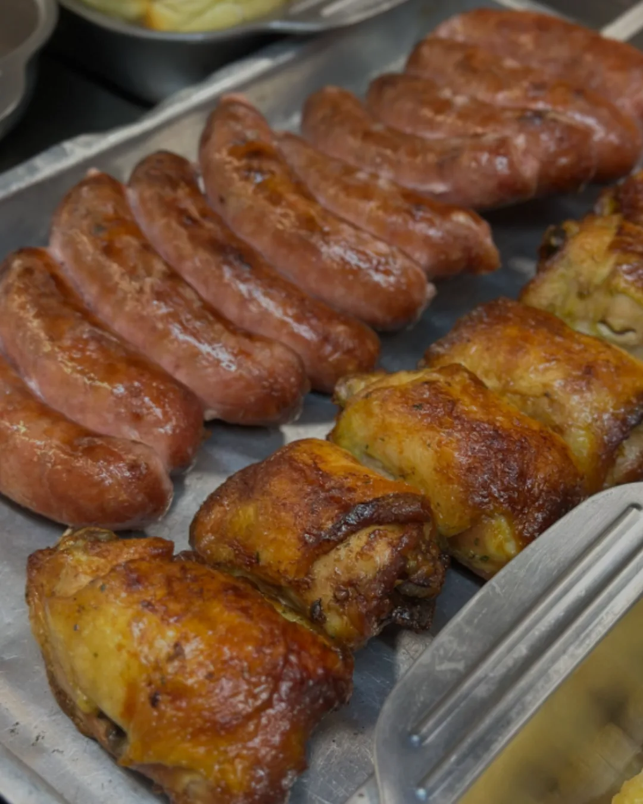
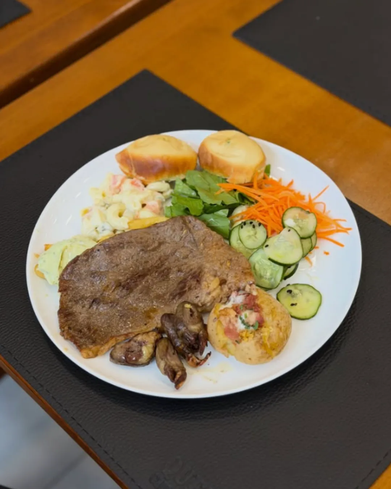
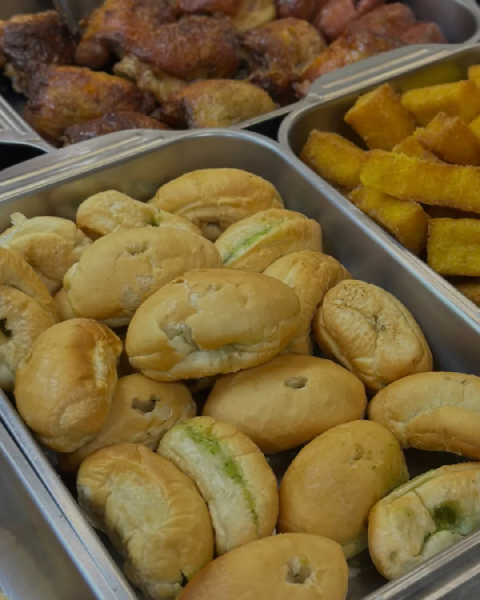

O verdadeiro sabor do churrasco gaúcho.
Uma tradição de sabor e qualidade desde 1989.
37 anos de história, buffet completo e churrasco gaúcho.
Venha viver essa experiência!

Uma tradição que reúne pessoas à mesa.
Uma história construída com tradição, dedicação e muito sabor. Desde 1989, a Churrascaria Querência faz parte da história de quem valoriza uma boa refeição e momentos especiais à mesa.
Há mais de 35 anos, a tradição e o sabor fazem parte da nossa história. Na Churrascaria Querência, cada refeição é preparada para proporcionar uma experiência especial, com o verdadeiro sabor da gastronomia e do churrasco gaúcho.
Mais do que servir refeições, queremos reunir pessoas, celebrar momentos e manter viva a tradição de receber bem.
198937 anos de história em Esteio/RS
Churrasco gaúcho.
Feito na brasa, com tradição desde 1989.

Cardápio diferente todos os dias.
Consulte o cardápio digital da casa e peça online. A comida chega quentinha na sua mesa.
Cada dia, uma ilha diferente.
- SegundaIlha de Pastel
- TerçaFeijoada Mexicana
- QuartaIlha de Pizza + Costelão 12h
- QuintaIlha de Sushi
- SextaIlha de Hambúrguer
- SábadoFechado
- DomingoCardápio especial de domingo

Carnes grelhadas e assadas.
Buffet completo e churrasco gaúcho.
Variedade para todos os gostos.
- Saladas
- Frutas e conservas
- Frios e acompanhamentos
- Pratos quentes
- Massas e risotos
- Carnes grelhadas e assadas
- Churrasco gaúcho
- Frutos do mar
- Sobremesas




Pão de alho artesanal.
Feito aqui, ao lado do buffet completo e do churrasco gaúcho. Para fechar a refeição, as sobremesas, e a banoffe é muito elogiada pelos clientes.
A mesa da Querência.
4,4
643 avaliações no Google.
Os clientes mais elogiam o atendimento e a sobremesa banoffe. Veja o que dizem sobre a Querência.
Venha nos visitar.
- Endereço
- Rua 24 de Agosto, 188 · Centro
Esteio/RS - (51) 98600-9524
- Horário
- Domingo a sexta, das 11h às 14h30
Sábado: fechado - Na casa
- Estacionamento cortesia ao lado
Espaço kids - @churrascaria_querencia
Rua 24 de Agosto, 188 · Centro
Esteio/RS
Fale com a gente
Preencha e continue a conversa pelo WhatsApp.
Do nosso buffet para a sua mesa.
Peça pelo cardápio digital e receba em casa, com a comida quentinha.